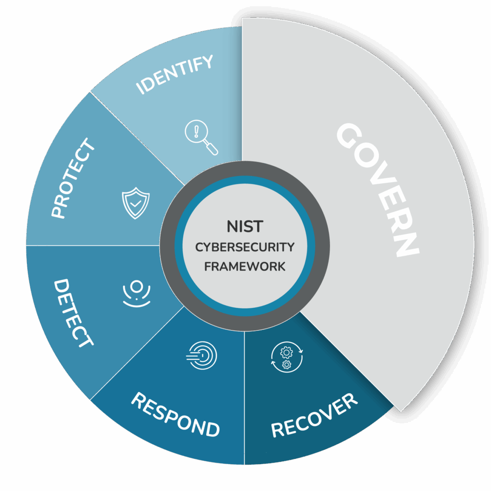

Cybersecurity: One of the major concentrations in Computer Science is cybersecurity. Graduates are the masters of virtual security that focuses on developing techniques and tool to keep our information safe. They cover everything from protecting data, recover lost data, seek and find threats, and attack to purge computer viruses.

Cryptography: One of the core concept in cybersecurity. Cryptography teaches methods, tools, and algorithms implemented to keep data secured and prevent unauthorized access. It consists on encrypting a human-readable message into a cyphered text and sent over the network towards its destination. The destination would then need to decrypt it using a correct encryption key. This could be like knowing how to replace certain letters with a specific one. There are various interesting ciphering methods that I recommend looking up! Ever heard of Caesar cipher? Or the famous Enigma Machine? They all were created under the theory of encrypting and were the foundations of cybersecurity!
Network Security: Another major topic in cybersecurity is network security. Network security focuses on protecting computers from external connections, usually from unauthorized or threatening ones. They manage who can and cannot access through the network. Since computers are all connected into the internet, which are networks of networks, the tools developed in network securities are like the middle man of these intersections. They're like the guards at a frontier or the security personnel at an airport. Some technologies examples we can commonly see are firewalls and VPNs.